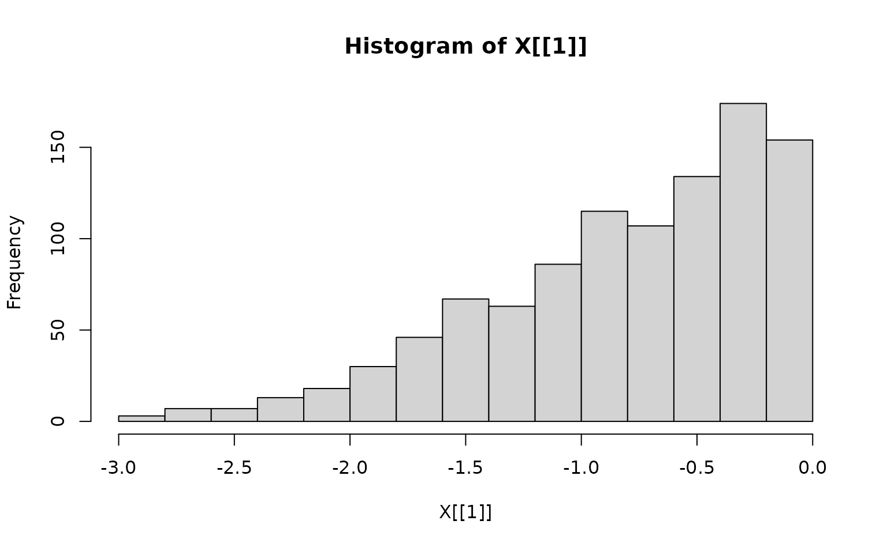

The current distributions in the samplr package are those supported by Rcpp and RcppDist.
The parameters these distributions take can be provided in a vector,
e.g. a vector c(0,1) for the standard normal
distribution.
| Abbreviation | Distribution Name | Parameters |
|---|---|---|
| unif | Uniform Distribution |
min, max
|
| norm | Normal Distribution |
mean, sd
|
| lnorm | Lognormal Distribution |
log_mean, log_sd
|
| gamma | Gamma Distribution |
shape, scale
|
| beta | Beta Distribution |
shape1,shape2
|
| nbeta | Non-central Beta Distribution |
shape1,shape2,
ncp
|
| chisq | Chi-squared Distribution | df |
| nchisq | Non-central Chi-squared Distribution |
df, ncp
|
| t | t Distribution | df |
| nt | Non-central t Distribution |
df, ncp
|
| f | F Distribution |
df1, df2
|
| nf | Non-central F Distribution |
df1, df2,
ncp
|
| cauchy | Cauchy Distribution |
location, scale, |
| exp | Exponential Distribution | rate |
| logis | Logistic Distribution |
location, scale
|
| weibull | Weibull Distribution |
shape, scale
|
| 4beta | 4-parameter Beta Distribution |
shape1,shape2,
minumum, maximum
|
| lst | Location-scale t Distribution |
df, location,
scale, |
| truncnorm | Truncated Normal Distribution |
mean, sd,
low_bound, high_bound
|
| trunct | Truncated t Distribution |
df, low_bound,
high_bound
|
| trunclst | Truncated Location-scale t Distribution |
df, location,
scale, low_bound, high_bound
|
| triangular | Triangular Distribution |
lower_limit, upper_limit,
mode
|
| Abbreviation | Distribution Name | Parameters |
|---|---|---|
| binom | Binomial Distribution |
size, success_prob
|
| nbinom | Negative Binomial Distribution (with success probability as parameter) |
size, success_prob
|
| nbinom_mu | Negative Binomial Distribution (with mean as parameter) |
size, mean
|
| pois | Poisson Distribution | lambda |
| geom | Geometric Distribution | success_prob |
| hyper | Hypergeometric Distribution |
number_successes,
number_failures, number_samples
|
| wilcox | Distribution of Wilcoxon rank-sum test statistic |
number_samples1,
number_samples2
|
| signrank | Distribution of Wilcoxon signed-rank test statistic | number_samples |
For multivariate distributions, distribution parameters are provided in a list, not a vector.
X <- sampler_mh(
start = 0, # starting point for the sampler
distr_name = "truncnorm", # Use abbreviation in distr_name
distr_params = c(0,1,-5,0), # provide distribution parameters as a vector for univariate distributions
sigma_prop = 1, # variance of the proposal distribution
)
hist(X[[1]])